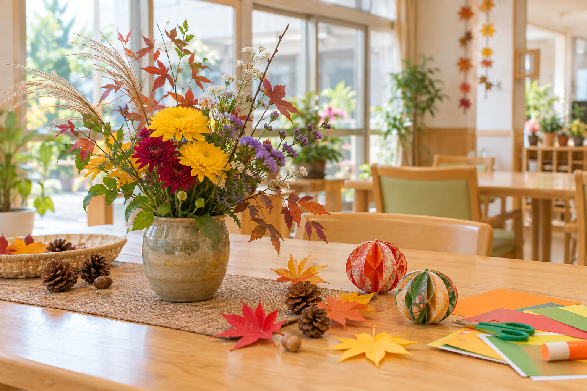

秋の飾り付けを行いました
共有スペースに秋の花と手作りの飾りを用意しました。季節を感じられる環境づくりを続けています。
※文章・画像はサンプルですNEWS & INFORMATION
日々の様子と、サービスに関する最新情報をお届けします。
SERVICE STATUS
具体的な人数や空室数は、最新情報を電話で確認できる表示にしています。
更新日：2026年9月12日（サンプル）
はい。担当者の予定を確認しますので、まずはお電話でご希望の日時と相談内容をお知らせください。
個室を中心に、一部相部屋もご用意しています。お部屋の状況は見学・入居相談の際にご案内します。
本部町、今帰仁村、名護市以北を中心にご相談を承っています。
はい。募集中の職種や勤務条件について、代表電話からお問い合わせいただけます。
CONTACT